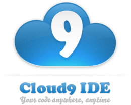

About Cloud
Salesforce - Software as a Service(SaaS)

Software as a Service (SaaS) is where software is delivery and licensing model where software is licensed via a subscription model. It is also referred to as On-demand software. SaaS sales reached $10 billion in 2010 according to a Gartner Group estimate. An example of SaaS is Salesforce, an American cloud computing company based in California. Most of its revenue comes from a customer relationship management (CRM) product, They also sell a range of commercial applications of social through internal development and acquisition. Its CRM service is broken down into several catagories: Commercial Cloud, Sales Cloud, Service Cloud, Data Cloud (e.g. Jigsaw), Marketing Cloud, Community Cloud(e.g. Chatter), Analytics Cloud, App Cloud and IoT with over 100,000 customers.
Cloud9 - Platform as a Service(PaaS)
Platform as a Service (PaaS) is a category of Cloud Computing Services that provides a platform allowing customers to manage, run and develop applications without the complexity of making the infrastructure that is needed with launching an app. An example of PaaS is Cloud 9 IDE(a Subsidiary of Amazon Web Services(AWS)) is an online integrated development environment, published as open source from version 3.0. It supports hundreds of programming languages, including C, C++, PHP, Ruby, Perl, Python, JavaScript with Node.js, HTML5, CSS and Go. It enables developers to get started with coding immediately with pre-configured workspaces, collaborate with their peers with collaborative coding features, and web development features like live preview and browser compatibility testing.
Amazon Web Serivices - Infrastructure as a Service(IaaS)

Infrastructure as a Service (IaaS) is a form of cloud computing that provides a virtualized computing resource over the internet. In IaaS, a cloud provider hosts the infrastructure components that traditionally present in an on-premise data center which would include servers, storage, networking hardware and the virtualization components. An example of IaaS is Amazon Web Services(AWS)(a Subsidiary of Amazon.com), which provides on- demand cloud computing platforms to individuals, companies and governments, on a paid subscription basis. It allows subscribers to have a fully-fledged virtual cluster of computers available through thee internet. The browser acts as a virtual computer, letting users log-in and use their virtual systems just as they would a real computer.
Gmail - Commuinication as a Service(CaaS)
Communications as a Service (CaaS) is an outsourced enterprise communications solution that can be leased from a single vendor. Such communications include Voice Over IP (Online Phone Calls), Instant Messaging (IM), Videoconferencing and collaboration. CaaS has evolved along the same lines as Software as a Service. An example of CaaS is Gmail is a free, advertising-supported email service developed by Google. At launch, Gmail had an initial storage capacity offer of one gigabyte per user, a significantly higher amount than competitors offered at the time. Today, the service comes with 15 gigabytes of storage. Users can receive emails up to 50 megabytes in size, including attachments, while they can send emails up to 25 megabytes. In order to send larger files, users can insert files from Google Drive into the message.